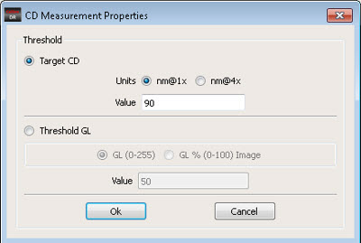

To measure the
CD variation for any defect, you can either set the target CD value
or the threshold GL value.
Procedure
- Target CD: In
the Calibre DefectReview window, click Settings
> Set CD Measurement Properties.
Figure 1. CD Measurement Properties
- Click Target CD.
- Select the units used for
CD measurement by clicking one of the Units options:
- Enter a value in the Value
text box.
- Click Ok. The values in CD Measurement Properties
dialog box are remembered across the sessions.
- Threshold GL: In
the Calibre DefectReview window, click Settings
> Set CD Measurement Properties.
- Click Threshold GL. Select from one
of three options in the threshold GL and enter a corresponding value
in the Value text box:
GL (0-255) —
Calculates the threshold GL. The value range is between 0.00 to
255.00. This is the default setting if Threshold GL is
selected.
GL% (0-100) Image — Calculates
the threshold GL value as a percentage of the dynamic GL range of
the whole image. The value range is between 0.00 to 100.00.
- Click Ok. The state of each of these options
buttons are remembered in Calibre DefectReview.